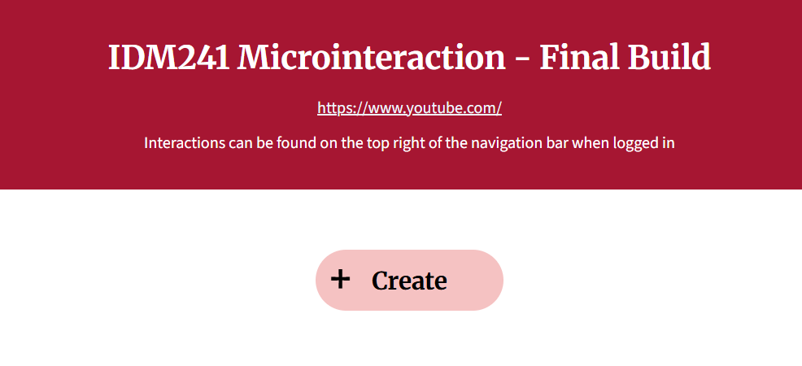

YouTube Create Button

Overview
For my Microinteraction project, I created and improved an interaction from an existing website or app. The website I chose was YouTube and I focused on the Create button which could be found on the header on the top right corner right by the profile button. The goal was to design and program a microinteraction and make improvements within it. The final product was a functioning create button with a dropdown showing four different options. This was developed in VSCode using HTML and CSS, managed through GitHub, and hosted on Netlify.
Context and Challenge
Background:
My final project for this class focuses on building an improved create button from YouTube's website. The project is an individual assignment and is one of the coding classes in the UXID program. Over the course of 10 weeks, only three assignments helped in the production of my final project: Alpha, Beta, and Final Project
Developed on a zero-cost budget, the project aimed to give students practical experience with creating microinteractions and build an understanding of what makes an interaction an interaction. It met the goals by allowing click inputs, and hover states. Throughout the project, I built a strong understanding of microinteraction and learned to apply this effectively.
Problem:
Originally I chose an interaction from Google Arts' website which I didn't notice it changing the way it is or works, or even disappearing randomly on different days. Despite this, I continued to submit my Alpha Build which was a recreation of the interaction to have a base for the final project. Because of the issues mentioned, I couldn't continue with Google Arts'. That led to me choosing YouTube as it is something I use often and I notice how much the create button lacks. Fortunately, this button had no issues so I continued on with using this interaction for my final project.
Goals & Objectives:
The project required to program an interaction with HTML and CSS starting with recreating an interaction of choice for the Alpha stage. From there, I had to add improvements to the interaction for the Beta. For my Final Project, I had to add more interactions to the improved button I made.
Process and Insight
Target Audience
This project is designed for anyone who uses YouTube and would like to create content or create a playlist. Having a playlist button under creation is a new addition since there are too many steps to create a playlist or it's confusing.
Development
First, I started with an interaction from Google Arts' website which I didn't notice it changing the way it is or works, or even disappearing randomly on different days. Despite this, I continued to submit my Alpha Build which was a recreation of the interaction to have a base for the final project. Because of the issues mentioned, I couldn't continue with Google Arts'. That led to me choosing YouTube as it is something I use often and I notice how much the create button lacks. Fortunately, this button had no issues so I continued on with using this interaction for my final project.
Final Project
To deploy my website, Netlify was used to connect to my GitHub repository and host.
The Solution
Live Project Link (Final Build)
The website shows the new and improved create button and the description of its triggers, rules, feedback, and loops and modes. The website is responsive so that it is accessible and responsive on all devices.
The Results
This 10-week project significantly expanded my understanding of microinteractions. I learned how to design and integrate triggers, rules, feedback, and loops and modes, and understand how these make up an interaction within everything on an interface.
The project also strengthened my time-management and project-planning abilities. Looking back, documenting feedback and following a more structured cycle of research, testing, and design would have made the process more efficient. Still, the experience proved how even simple content can benefit from intentional structure and thoughtful design.